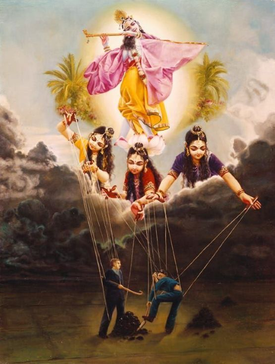

Māyā Shakti?
Posted on : 17th December, 2024

“Māyā is working in two ways: prakṣepātmikā-śakti, āvaraṇātmikā-śakti. Āvaraṇātmikā-śakti means she is covering. Āvaraṇātmikā-śakti, she is covering. Real fact is covered by māyā. Just like the cloud covers the sunshine. We cannot see. Now a few days it is going on; there is cloud always. We do not see the sun. That does not mean there is no sun in the sky. So māyā does not allow us to see Kṛṣṇa. That is one śakti. Āvaraṇātmikā-śakti. And another śakti is prakṣepātmikā-śakti. Even one desires to see Kṛṣṇa, she throws away. She tests whether actually he wants Kṛṣṇa or keeping Kṛṣṇa in the front, he wants some material pleasure. Therefore she throws away. In this way māyā-śakti is acting.
Kṛṣṇa therefore says, daivī hy eṣā guṇamayī mama māyā duratyayā (BG 7.14). māyā is very powerful. But if one is very rigid in devotional service, mām eva ye prapadyante māyām etān taranti te, he can overcome the influence of māyā”
~ Lecture on Bhagavad-gītā 13.3, 26/9/1973 Mumbai.